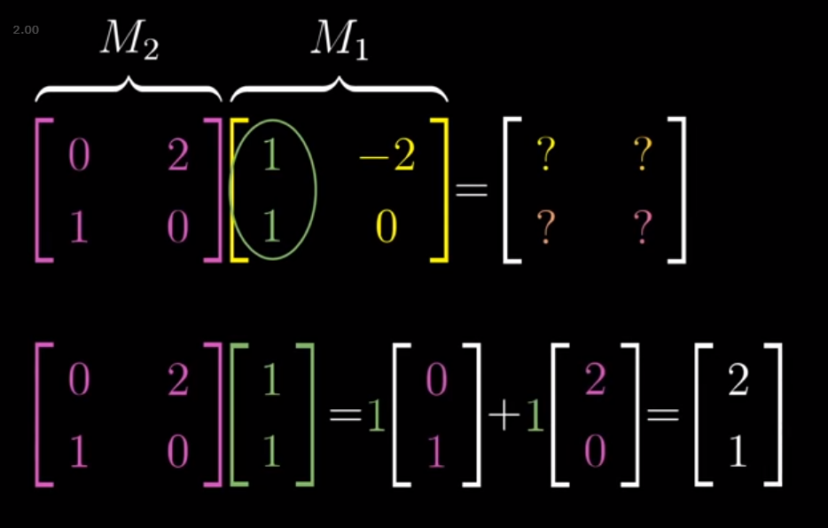

Linear Transformations
Rethinking
One of the best, earliest insights that I got from watching 3blue1brown’s excellent videos on The Essence of Linear Algebra is how to conceptualize a linear transformation performed by a matrix, A.
For starters, he conceptualizes everything he talks about relative to the unit vectors i and j, which are vectors of magnitude 1 that point in the x and y directions, respectively.
from IPython.display import Image
Image('images/basis_unit_vectors.PNG')
Thus, for any matrix, A, that defines a linear transformation, we should make it a habit to immediately identify the columns of A as mappings for these unit vectors.
That’s to say that for a matrix that looks like
a b
c d
Then the first column, [a c]^T, corresponds to where the i vector winds up. Similarly, [b d]^T is where j does.
Verifying this computationally is trivial (and a little tedious), but internalizing the relationship between columns of A and unit vectors makes framing what’s actually happening in the transformation a breeze.
Composition
He expands on this visual intuition in his video on compositions of multiple linear transformations, encouraging you to think of the product of two matricies M3 = (M2)(M1) as the same as “applying M1, then applying M2” but in one step.
Moreover, we can lean on our intuitive, “first column of M1 is where i goes”, and think of the M2, M1 multiplication step in two parts:
Image('images/composition_i.PNG')
Preserves Spacing
Finally, he iterates again and again throughout his series that a nice consequence of a linear transformation is that all parallel and evenly spaced points/gridlines in our original space continue being parallel and evenly spaced after our linear transformation. In this image, the gray lines represent our typical (x, y) space, and the blue and white lines represent our transformation to a new space using the matrix
1 1
0 2
Image('images/gridlines.PNG')
this property comes up a ton in later sections